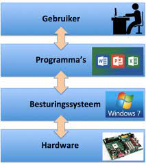
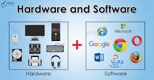

De logische laag van een computersysteem omvat de softwarecomponenten en -structuren die verantwoordelijk zijn voor het beheren van hardwarebronnen en het mogelijk maken van de uitvoering van softwaretoepassingen. Hieronder valt onder andere het besturingssysteem. Laten we de logische laag en de rol van het besturingssysteem in meer detail bekijken:
Functie: Het besturingssysteem is een essentieel softwarecomponent dat de basisfunctionaliteit en middelen van een computer beheert. Het fungeert als een tussenlaag tussen de hardware en softwaretoepassingen en biedt een geïntegreerde omgeving voor gebruikers om met hun computer te communiceren.

a. Hardwarebeheer: Het besturingssysteem beheert hardwarebronnen zoals CPU, geheugen, opslagapparaten, invoer- en uitvoerapparaten. Het verdeelt deze bronnen efficiënt tussen actieve processen en taken.
b. Bestandsbeheer: Het OS beheert het bestandssysteem, waardoor gebruikers gegevens kunnen opslaan, organiseren en ophalen. Het biedt ook beveiligingsmechanismen om de toegang tot bestanden te regelen.
c. Taakplanning: Het besturingssysteem is verantwoordelijk voor het toewijzen van CPU-tijd aan verschillende processen en taken om de computer zo efficiënt mogelijk te laten werken. Dit omvat multitasking en taakwisseling.
d. Gebruikersinterface: Het OS biedt een gebruikersinterface, zoals een grafische gebruikersinterface (GUI) of een opdrachtregelinterface (CLI), waarmee gebruikers met de computer kunnen communiceren en softwaretoepassingen kunnen uitvoeren.
e. Beveiliging en toegangscontrole: Het besturingssysteem beheert de beveiliging van het systeem door middel van gebruikersaccounts, wachtwoorden en autorisatieniveaus om ongeoorloofde toegang tot gegevens en bronnen te voorkomen.
Het besturingssysteem fungeert als een platform waarop andere software kan draaien. Het biedt de nodige abstractie en controle over hardware, waardoor softwareontwikkelaars toepassingen kunnen schrijven zonder zich zorgen te hoeven maken over de specifieke hardwareconfiguratie van elke computer. Het besturingssysteem zorgt ook voor stabiliteit en betrouwbaarheid door foutafhandeling en systeembeheerfuncties.
Naast het besturingssysteem kunnen er andere softwarelagen en -toepassingen boven op de logische laag worden uitgevoerd, zoals applicatiesoftware (bijv. tekstverwerkers, browsers, games) en systeemhulpprogramma's (bijv. antivirussoftware, back-upprogramma's). Deze software bouwt voort op de services en functies die worden geleverd door het besturingssysteem en stelt gebruikers in staat om specifieke taken uit te voeren op hun computer.